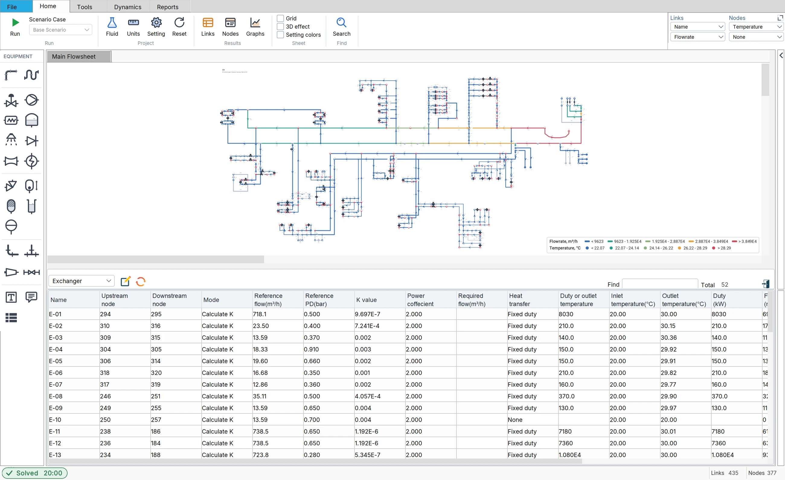
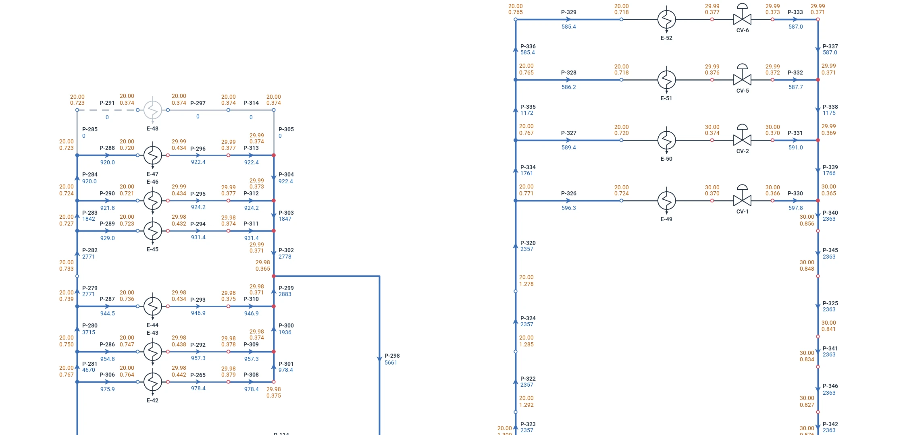
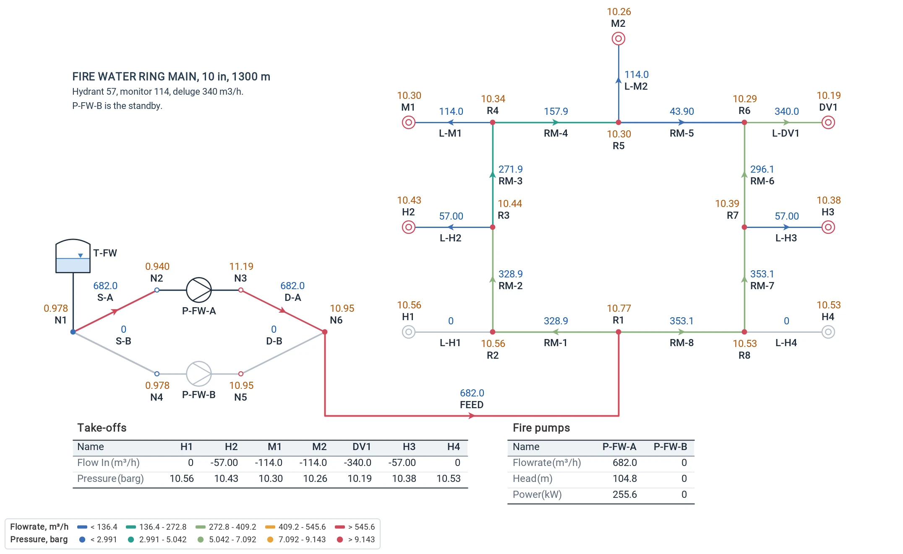
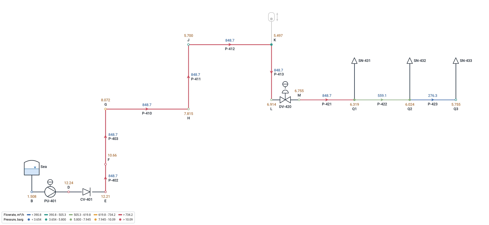

Big liquid networks solved in one run, with the temperature at every node and the duty of every exchanger. Size the pumps and the lines, rate the control valves, design the cooling water and the fire water, then take the same model into the transient study.
Branched, looped and multi-loop networks of thousands of pipes, balanced automatically.
Pumps
Curves from a few vendor points, parallel and series running, standby, speed control, NPSH available against required.
Control valves
Flow, pressure or pressure-drop control, or rating on Cv and opening, with the valve characteristic.
Check valves
No reverse flow on a valve or a pipe: a standby pump's discharge, a branch that must not drain back.
Heat exchangers
On a fixed duty or an outlet temperature: the temperature in and out, the duty, the required flow and the overdesign.
Flowmeters and orifices
Flow elements on the line, and orifice plates to ISO 5167-2 with their beta ratio and permanent loss.
Tanks and reservoirs
Fixed-head and variable-level boundaries, open or under pressure, each with its own supply temperature.
Fittings in detail
Elbows, tees, valves, entries and exits counted by type, or one K for the line, from the library.
Spray nozzles
Nozzles by K factor, laid out on tanks and roofs by the Nozzle Arrangement and checked against the design rules.
Variable temperature
Density and viscosity at the temperature of every pipe, streams mixed by mass at every node.
Scenarios
Normal, peak and emergency cases of one model in the Scenario Manager, compared side by side.
Pipe sizing
Lines sized against velocity and pressure-drop criteria, and checked in the line list.
Temperature and duty
The energy balance, with the hydraulics.
Choose a fluid of variable properties and the Liquid mode carries the temperature through the network: each exchanger heats or cools on its duty or to its outlet temperature, the streams mix by mass where they meet, and every pipe takes the density and the viscosity of its own temperature. In the chilled water network above, the two chillers cool the water to 7 °C, the four air handling coils take 235, 185, 140 and 95 kW and send it back between 11.97 and 12.10 °C, and the chillers take out the same 655 kW: the energy balance closes.
Duty or outlet temperature
Give the duty and Flowmax works out the outlet temperature, or give the outlet temperature and it works out the duty.
Temperature at every node
On the sheet and on the right panel, with the inlet and outlet temperature and the duty of each exchanger in the Links table.
NPSH at the pump's temperature
The vapour pressure is taken at the temperature at the pump suction, so a hot return gets the margin it really has.
Cooling water
Every exchanger, its flow and its duty.
The sea water cooling system of a petrochemical plant, 435 links: four sea water pumps, three of them running, 48,500 m³/h to 52 exchangers spread over the site, each with its control valve. Flowmax balances the whole network in one run with every exchanger in service on its duty — 464 MW in all, the sea water in at 20 °C and out at about 30 °C — and shows the flow each exchanger gets, the pressure at every node and the closed spares greyed out.

The whole sea water system, and the Links table on its Exchanger view: every exchanger, its temperature in and out and its duty.

Close up on two groups of exchangers: each with its valves, the temperature and the pressure at every node, the flow on every line, a closed spare greyed out.
Fire water
From the fire pumps to the last nozzle.
Ring mains, hydrants, monitors and deluge valves; the duty fire pump and its standby on their curves; spray systems laid out on tanks and roofs following NFPA calculation methods; and every fire case of the plant in the Scenario Manager, which hydrants run and which ring section is closed. Then the same model in the Transient mode: the priming time, the deluge filling and the fire pump start.

A fire water ring main, 10 in and 1,300 m: the duty pump, the standby, hydrants, monitors and a deluge, with the take-offs and the pumps in tables on the sheet.

An offshore fire water line: the fire pump, the riser and a deluge valve feeding its spray nozzles.
Size, rate, get ready for the transient
From the first sizing to the surge study.
Pump sizing and rating
Give the flow and the head, or the discharge pressure, and Flowmax sizes the pump; give its curve and it rates it in the network, with power, efficiency and NPSH.
Ready for the transient study
The Liquid model is the Transient model: when the steady state is right, switch to Transient, add the event and run. No second model, no data typed twice.
The documents
Line list and line sizing, equipment list, pump and control valve datasheets in Excel and PDF, and the calculation report with the network on its cover.
Tutorial 1 · 2:29
Watch it in the program.
Build a pumped water network from scratch: the start window, the fluid, the pumps, valves and tanks, the run, the results, three pump speeds in the Scenario Manager and the PDF report.
Ready to model your network?
Request a free trial and start calculating with Flowmax.